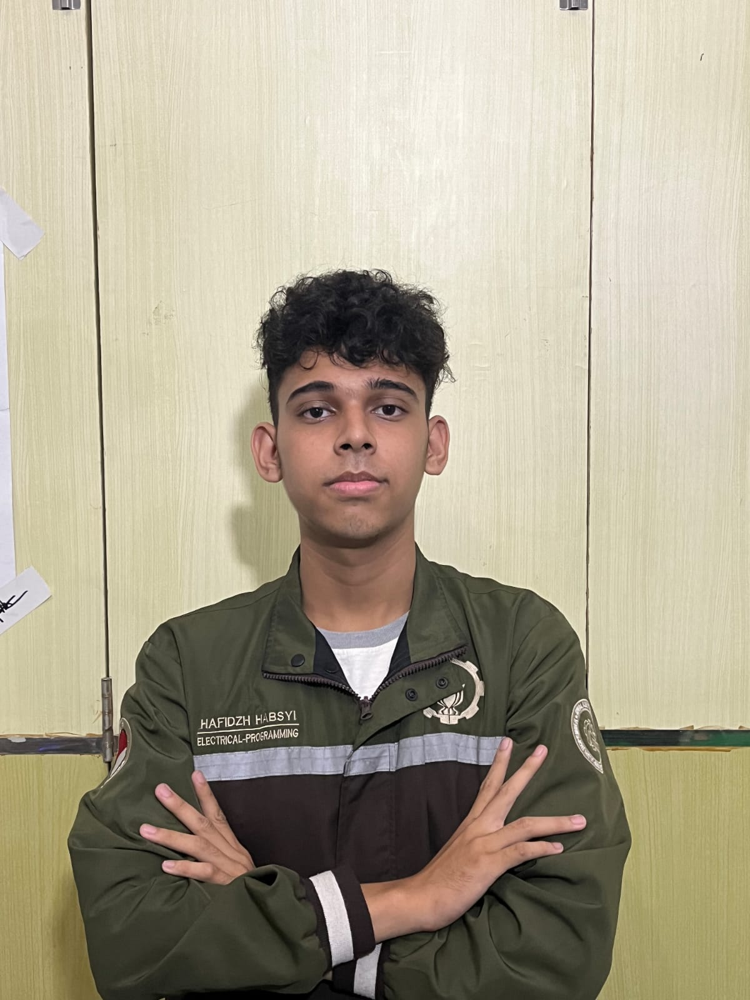

Muhammad Hafidzh
I'm an electrical engineering undergraduate at Sepuluh Nopember Institute of Technology (ITS) with a strong focus on robotics, embedded systems, and control architectures. I thrive on solving real-world problems — from designing autonomous waste-sorting robots to building medical assistant platforms. My experience spans STM32/ESP32 programming, ROS1/ROS2, sensor fusion, PCB design, and team leadership in national-level robotics competitions.

Education
Experience & Leadership
- Guided students in experiments and troubleshooting techniques of electronic theory.
- Developed autonomous navigation stack for KRTMI competition robots using ROS1/ROS2, LiDAR odometry, and sensor fusion.
- Programmed STM32 for motor kinematics (omniwheel & differential drive), UART master-slave communication, and CAN bus interfacing.
- Integrated computer vision (OpenCV) with Jetson TX2 for waste sorting robot, achieving 95% detection accuracy.
- Mentored junior members in embedded C, PCB design (KiCad), and ROS fundamentals; organized workshops for 40+ students.
🏆 National & Regional Awards
1st Place KRTMI National
Indonesian Robot Contest (KRI) 2024 · PUSPRESNAS
4th Place KRTMI National
Indonesian Robot Contest (KRI) 2023
2nd Place KRTMI Regional
KRI Regional Level 2023
1st Physics Olympiad (Province)
KSN South Sumatra 2021 · PUSPRESNAS
3rd Physics Olympiad (Regency)
KSN Ogan Komering Ilir 2021
Technical Arsenal
Embedded & Robotics
Hardware & Design
Soft Skills
🤖 Robotics & Engineering Projects
Robot Pemilah Sampah
Autonomous waste sorting robot for KRTMI 2024. Uses conveyor belt + 5 waste categories. STM32 kinematics, ROS1 Noetic on Jetson TX2, LiDAR + odometry fusion via complementary filter, object detection subscription.
Robot Digital Twin
Remote-controlled robot via PS4 joystick (Bluetooth + ESP32). 4 omniwheel drive, STM32 master controller. Designed PCB supply management and electrical wiring for motors, servo, battery system.
Robot Pengumpan (Feeder)
Feeder robot for KRTMI 2024: transfers waste to vibrating conveyor. STM32 3‑omniwheel kinematics, UART master-slave (STM32 ↔ ESP32), PS5 joystick control via Bluetooth on ESP32.
RAISA – Robot Medical Assistant
ITS-Airlangga collaborative project. Programmed STM32 for 3‑omniwheel kinematics, RS485 communication with JK BMS, CANopen (ZItech ZLAC8015D) for BLDC motors, UDP over Ethernet.
Let's Connect
Reach out directly
hafidzhhabsy04@gmail.com
+62 813-7932-2324
linkedin.com/in/muhammadhafidzh
Yaktapena 2 Residence 17B, Palembang, Indonesia
Send a message
I'll respond within 24‑48 hours.